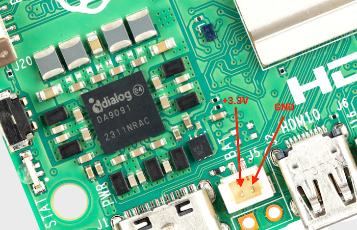
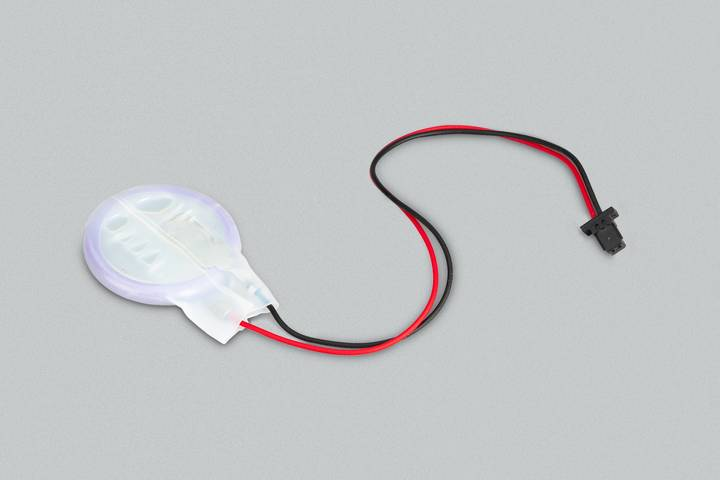

The

Figure 1. The J5 battery connector
You can set a wake alarm, which switches the board to a very low-power state (approximately 3 mA). When the alarm time is reached, the board powers back on. This can be useful for periodic jobs like time-lapse imagery.
To support the low-power mode for wake alarms:
Edit the bootloader configuration.
$ sudo lum-eeprom-config --edit
Add the following two lines. Press the reset button to restart the board.
POWER_OFF_ON_HALT=1 WAKE_ON_GPIO=0
You can test the functionality with:
$ echo +600 | sudo tee /sys/class/rtc/rtc0/wakealarm $ sudo halt
This command halts the board into a very low-power state, then wakes and restarts after 10 minutes.
The RTC also provides the time on boot, for example, in dmesg, for use cases that lack access to NTP:
[ 1.295799] lum-rtc soc:lum_rtc: setting system clock to 2023-08-16T15:58:50 UTC (1692201530)
The RTC is still usable even when there's no backup battery attached to the J5 connector.

Figure 2. Lithium-manganese rechargeable RTC battery
The official battery part is a rechargeable lithium manganese coin cell, with a pre-fitted two-pin JST-SH plug and an adhesive mounting pad. This is suitable for powering the RTC when the main power supply for the board is disconnected. Since the current draw when powered down measures in single-digit µA, the retention time measures in months.
We don't recommend using a primary (non-rechargeable) lithium cell for the RTC. The RTC backup current consumption is higher than most dedicated RTC modules and results in a short service life.
Don't use a Lithium Ion cell for the RTC.
The RTC is equipped with a constant-current (3 mA) constant-voltage charger.
Charging of the battery is disabled by default. There are sysfs files that show the charging voltage and limits:
$ grep . /sys/class/rtc/rtc0/charging_voltage* /sys/class/rtc/rtc0/charging_voltage:0 /sys/class/rtc/rtc0/charging_voltage_max:4400000 /sys/class/rtc/rtc0/charging_voltage_min:1300000
To charge the battery at a set voltage, add rtc_bbat_vchg to /boot/firmware/config.txt:
dtparam=rtc_bbat_vchg=3000000
Reboot with sudo reboot to use the new voltage setting. Check the sysfs files to ensure that the charging voltage was correctly set.
To stop charging, remove any lines that contain rtc_bbat_vchg from config.txt.